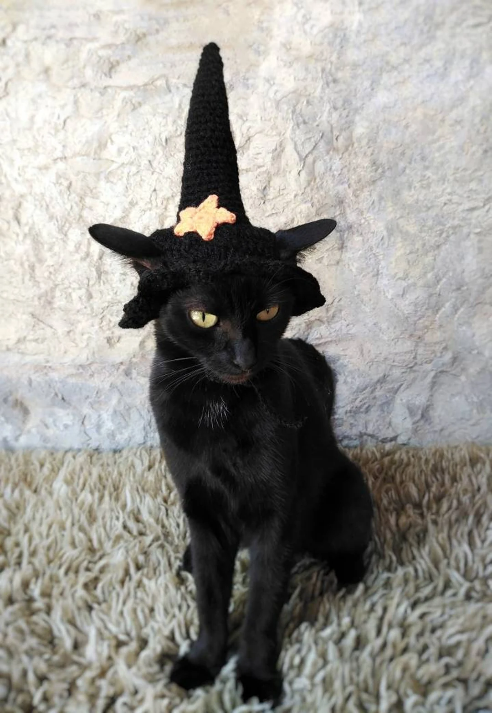

O mně
Jmenuji se Matyáš, bydlím v Komárně a rád hraju na hudební nástroje.
Mým nejoblíbenějším a zároveň jediným koníčkem je lukostřelba.
S programováním jsem do teď neměl žádné zkušenosti,
ale teď mě učí ten nejlepší učitel pan Leon Holub
a já začínám chápat o co vlastně v tomhle předmětu jde.
Nevím co bych o sobě víc řekl, takže tímhle ukončuji svůj popis.
- Lukostřelba
- Hudební nástroje
- Brawl Stars
- Psy